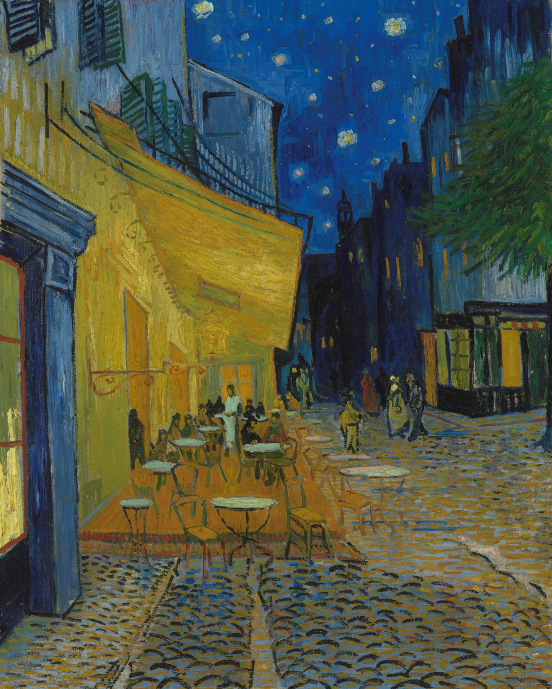

最初は60〜90分を目安に。時間ではなく「まだ見たい」で終われるくらいがちょうどいい。
美術館へ行く前に「何時間くらい見ればいい？」と考えるのは、とても自然です。ただ、長くいれば充実するわけではありません。集中が切れた後の30分より、まだ目が元気な最初の30分の方がずっと濃いこともあります。時間は「全部見るため」ではなく、「最後まで見る目を残すため」に決めるのがおすすめです。
1. まずは60〜90分を目安にする
美術館に何時間いれば「ちゃんと見た」ことになるのか。最初はそこが気になります。でも、鑑賞時間に正解はありません。作品数、会場の広さ、混雑、体調でかなり変わります。
初めてなら、まず60〜90分くらいを一つの基準にしておくと楽です。短すぎる気がするかもしれませんが、立ったまま静かに集中する時間は思っている以上に疲れます。90分見てまだ元気なら延長する。そのくらいの方が、最後まで作品を見る目が残ります。
予約制の展覧会でも、入場時刻が指定されているだけで退場時刻までは決まっていない場合があります。一方、完全入替制や閉館間際など例外もあるので、公式案内は確認します。時間制限がなければ、「最低何時間いなければ」と考える必要はありません。
2. 展示の大きさで時間を変える
常設展の一部だけ見るのか、大規模な企画展を最初から最後まで歩くのかで必要な時間は違います。大きな展覧会でも、全部の作品へ同じ時間を使う必要はありません。
| 小規模展示 | 45〜60分くらいから。気になる作品があれば延長。 |
|---|---|
| 一般的な企画展 | 60〜90分を基本に、休憩を入れてもよい。 |
| 大型展・常設＋企画 | 最初から全部制覇せず、見る範囲を分ける。 |
時間を決める目的は急ぐためではなく、後半まで集中力を残すためです。
3. 最初から最後まで同じ速度で見ない
入口ではまだ元気なので、一作品ずつ丁寧に見たくなります。ところが最初の部屋で力を使い切ると、後半の目玉作品のころには「もう座りたい」となります。
最初は全体を少し速めに見て、目が止まった作品だけペースを落とす。自分の興味に合わせて速度を変えると、同じ90分でも満足度がかなり変わります。
もう一つ有効なのが、前半で「あとで戻る作品」を決めておくことです。気になる作品を見つけても、その場で全部理解しようとせず、まず一周して全体を見る。残った時間で戻る。これなら後半の作品を見逃しにくく、戻った作品には自然と長く時間を使えます。
4. ベンチに座る時間も鑑賞の一部
座ると鑑賞が途切れる気がしますが、むしろ逆です。数分休むと目がリセットされ、次の部屋の色や光が新鮮に見えることがあります。
ベンチから見える作品があれば、遠くから眺めるのも面白いです。近くでは筆跡ばかり見えていた作品が、離れると大きな形としてまとまって見えることがあります。
休憩中にスマホで情報を詰め込むより、何も見ずに数分座るだけでも十分です。目の前の作品を遠くからぼんやり眺めると、近距離では見えなかった大きな色面や構図が見えてくることがあります。休むことと見ることを分けすぎなくて大丈夫です。
5. 「もう入ってこない」が疲れのサイン
作品名を読んでも頭に残らない、全部同じように見える、スマホを見る回数が増える。こうなったら集中が落ちています。
その状態で最後まで義務のように歩くより、休むか、見たかった作品へ移動する方がいいです。鑑賞は完走競技ではありません。
6. 一作品の前に10分いてもいい
逆に、気になる作品の前で長く止まっても問題ありません。5分、10分と見ているうちに、最初には見えなかった小さな線や人物、色の繰り返しが出てきます。
展示全体を90分で見ることより、一枚を長く見た記憶の方が、帰宅後まで残ることもあります。

7. 美術館の後に予定を詰め込みすぎない
美術館のあとに買い物、食事、別の展覧会まで詰めると、「時間内に出なければ」という気持ちが強くなります。初めての展覧会ほど、終了時刻だけ決めて、その後に少し余白を残す方が安心です。
ショップを見るなら、その時間も含めて考えておきます。展示90分＋ショップ20分くらい、と分けて考えると慌てにくくなります。
8. 「もう少し見たかった」で帰るくらいがいい
美術館を趣味にするなら、一回の満足度だけでなく「また行きたい」と思えることの方が大切です。
全部を見切ってへとへとになるより、少し余力を残して帰る。次に別の展覧会へ行ったとき、前回との違いを感じられる。それが少しずつ積み重なると、美術館へ行くこと自体が気楽になります。
「90分見たから十分」「2時間いたから上級者」というものでもありません。30分で一枚だけ強く残る日もあれば、二時間見ても散漫な日もあります。帰るときに一、二作品思い出せるなら、その日の鑑賞は十分成功です。時間より、何が残ったかで考える方が次につながります。
最初は60〜90分を目安に。時間ではなく「まだ見たい」で終われるくらいがちょうどいい。